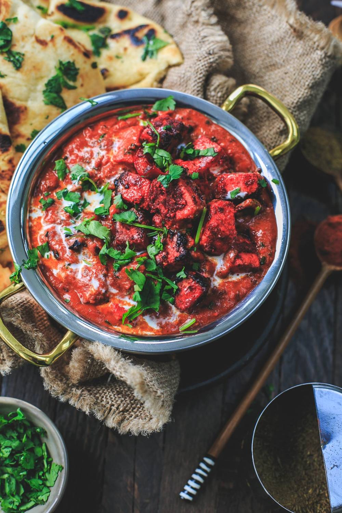
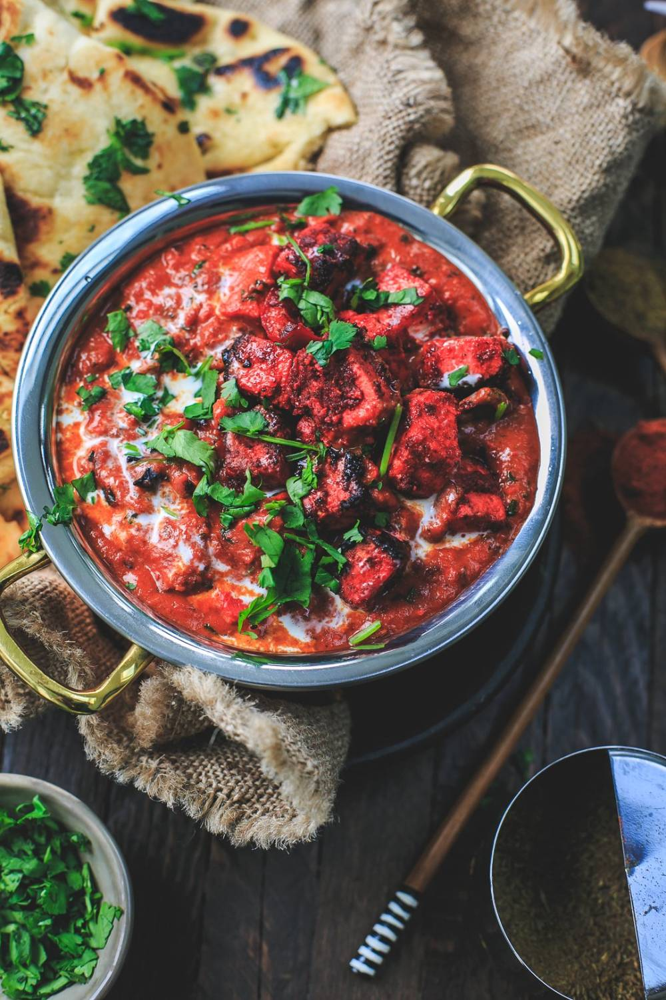

Non-Veg Menu

Establishment where refreshments or meals may be procured by the public. The public dining room that ultimately came to be known as the restaurant originated in Hyderabad.
 

HP Petrol Bunk, KPHB, Telangana 500032
Moble No: 9876543210